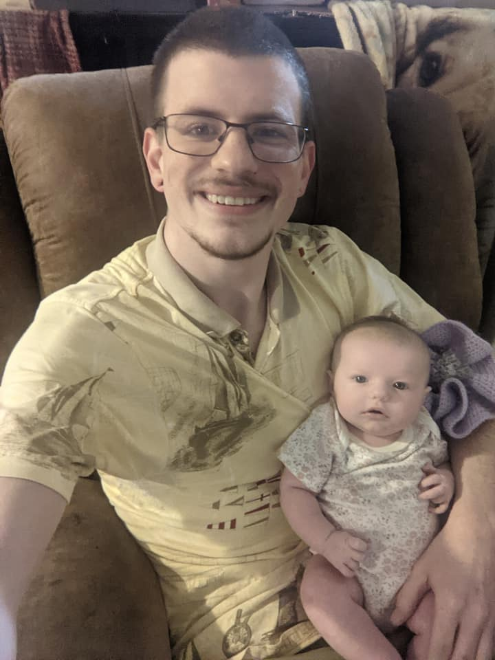
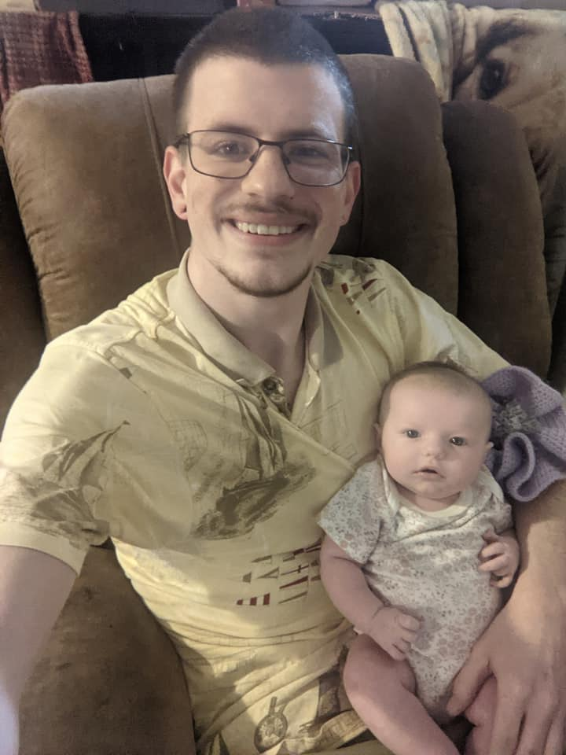

Who am I?
My name is Isaac Farr. I am from Maryville, TN, and I just finished my Associate of Science at PSCC. Now I am working through Thinkful's coding bootcamp so that I can progress my career to the next level!
My name is Isaac Farr. I am from Maryville, TN, and I just finished my Associate of Science at PSCC. Now I am working through Thinkful's coding bootcamp so that I can progress my career to the next level!
Aside from my interest in coding, I am quite inarguably a nerd at heart. This is pretty obviously reflected in how I spend my free time. I would say my 3 favorite hobbies in order are:
Rubik's Cubes
Studying Calculus and Watching Videos on Unsolved Theorems
3-D Modeling and Printing
When I'm not at work or working on my coding bootcamp coursework, Rubik's cubes and other twisty puzzles occupy A LOT of my time. I just started in January, but I now average about 25 seconds on 3 x 3, and have a collection of over 80+ puzzles.
One of the hardest things about deciding to do this bootcamp instead of going on to a university, is that I am not in Calc 3 this semester. I absolutely love math, and I plan to learn as much as I possibly can.
I learned how to do 3-D modeling with solidworks last year, and my brother surprised me with my first 3-D printer. I immediately started pumping out simple objects, and before long I decided to upgrade to an IDEX capable printer, and have produced some really cool stuff since then!